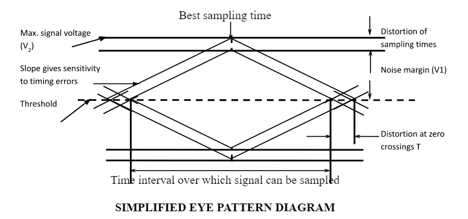

_preview_rev_1.png)
|
K.J. Somaiya Virtual Labs |

|
Experiment 6 - EYE Diagram
Aim: -
To observe the effect of signal Distortion using EYE-DiagramApparatus: -
Base Band Digital Transmission System Kit, Power Supply, connecting chords, 20MHz trace OscilloscopeTheory: -
The eye pattern technique is a simple but powerful measurement method for accessing the data-handling ability of an ability of a digital transmission system. This system has used extensively for evaluating the performance of wire systems. The eye pattern measurements are made in the time domain and allow the effects of waveform distortion to be shown immediately on an oscilloscope.
An eye pattern can be observed in the process as mentioned. The output from a pseudorandom pattern generator is applied to the vertical input of an oscilloscope and the data rate is used to trigger the horizontal sweep. This results in the type of pattern which is called the eye pattern because the display shape resembles a human eye.
To measure system performance with the eye pattern method, a variety of word pattern should be provided. A convenient approach is to generate a random data signal, because this is the characteristic of data streams found in practice. This type of signal generates ones and zeros at a uniform rate but in a random manner. A variety of pseudorandom pattern generators are available for this purpose. The word pseudorandom means that the generated combination or sequence of ones and zeros will eventually repeat but that is sufficiently random for test purposes. A pseudorandom bit sequence comprises four different 2-bit long combinations, eight different 3-bit long combinations, sixteen different 4-bit long combinations, and so on (i.e. sequences of different N-bit long combinations) up to a limit set by the instrument. After this limit has been generated, the data sequence will repeat. A great deal of system performance information can be deduced from the eye patter display.

The optimum sampling corresponds to the max eye opening. ISI at this time partially closes the eye and thereby reduces the noise margin. If synchronization is derived from the zero crossings, as it usually is, zero crossing distortion produces jitter and results in non-optimum sampling times. The slope of the eye pattern in the vicinity of the zero crossings indicates the sensitivity of timing error. Finally, any nonlinear transmission distortion would reveal itself in an asymmetric or ‘squinted’ eye.
Procedure: -
- Connect power supply in proper polarity to the kit and switch setting it ON, keeping the switch faults in OFF position.
- Keep the switch SW1 to generate PRBS signal.
- Connect the data OUT post of generator to the TX in post of the TX filter.
- Set the rotary switch SW2 of the TX channel to position no. 5.
- Connect the data from the TX OUT post to the DATA in post of Adder.
- Connect the noise from NOISE OUT post of noise source to NOISE in post of the Adder.
- Keep the level to minimum by rotating the pot P1 in the anti-clockwise direction.
- Connect the CLOCK OUT post of PRBS generator to EXT. TRIG. of CRO.
- Switch ON the EXT, TRIG. button of the CDR.
- Connect the detected signal at the Adder OUT post to the vertical channel Y input of the CRO.
- Observe the eye pattern on the CRO for different clock frequencies starting from 16KHz to 1.024MHz.
- To calculate the noise margin percentage and timing jitter percentage, set the clock frequency to 16KHz and bandwidth position of the TX filter to position no. 1.
- Increase the noise level to maximum; perform the calculation as per the given formula
- For noise margin percentage: (V1/V2)*100%
- For timing jitter percentage: (⊗T/Tb)*100%
- Increase the clock frequency to 32 KHz and later to 128KHz keeping the bandwidth position to position no. 1 and perform the calculation as per the given formula.
- Observe the differences in the percentage at different clock frequencies.
- Keep the bandwidth position to 5 and the clock frequency of the PRBS generator to 16KHz.
- Now increase the clock frequency simultaneously and observe the opening of the eye.
Observation: -
Observe the eye pattern at the given clock frequencies.
| Sr. No. | Clock Frequency | Bandwidth Position |
|---|---|---|
| 1. | 10 KHz | Position 1, 3, 5 |
| 2 | 128 KHz | Position 2, 4, 5 |
| 3 | 1.024 MHz | Position 5 |
The width of the eye opening defines the time interval over which the received signal can be sampled without error from the inter symbol interference. The best time to sample the received waveform is when the height opening is the largest.
The height of the eye opening is reduce as result of amplitude distortion, it is given by the vertical distance between the top of the eye opening and the maximum signal level. The greater the eye closure becomes, the more difficult it is to detect the signal.
The rate at which the eye closes as the sampling time is varies (i.e. the slope of the eye pattern slides) determines the sensitivity of the system to timing errors. The possibility of the timing error increases as the slope becomes more horizontal.
Calculation: -
NOISE MARGIN PERCENTAGE:The height of the eye opening at the specified sampling time shows the noise margin or immunity to noise. Noise margin is the percentage ration of the peak signal voltage V1 for an alternating bit sequence (defined by the height of the eye opening) to the maximum signal voltage V2 as measured from the threshold level.
Noise margin (percent) = V1 / V2 * 100%
Where,V1 = Noise margin
V2 = Maximum sign
Clock frequency = 10 KHz
V1 = (Actual voltage level) =
V2 = (Threshold voltage level) =
Noise Margin = V1/V2 =
% Noise margin (V1/V2)*100% =
TIMING JITTER PERCENTAGE:
Timing jitter (edge jitter or phase distortion) arises from the noise at the receiver side. If the signal is sampled in the middle of the time interval (i.e. midway between the times when the signal crosses the threshold level) then the amount of distortion ⊗T at the threshold level indicates the amount of jitter.
Timing jitter (percent) = ⊗T / Tb * 100%
Where,⊗T = Timing jitter
Tb = Bit duration
Timing jitter = ⊗T/Tb =
% Timing jitter (⊗T/Tb)*100% =